您是否見過一種綠色身體、灰色胸腹，看起來像穿著一件灰色毛衣的鸚鵡？牠就是本網頁的主角——和尚鸚鵡！
在這裡你可以了解與和尚鸚鵡有關的基礎知識，另外還可以認識顏色多樣化的和尚鸚鵡
點擊下方，開始探索和尚鸚鵡的奇妙世界吧！
| 項目 | 內容 |
|---|---|
| 學名 | 和尚鸚鵡(Myiopsitta monachus) |
| 別稱 | 塔樓鸚鵡 |
| 原產地 | 南美洲（阿根廷及周邊國家） |
| 平均壽命 | 15-30年（飼養得當可更長） |
| 平均體長 | 28-30公分 |
| 平均體重 | 90-150克 |
原生種為綠色身體，胸部和前額為淡灰色，腹部是淡黃綠色，翅膀飛羽呈深藍色，頭部灰白，像戴了帽子。可以提一下牠的「階梯狀」尾羽和橘黃色的喙。
學習能力強，能學會不少單詞和技巧。
精力充沛，需要大量玩耍和互動時間。
在野外是群居動物，作為寵物會非常親近主人，但也可能產生分離焦慮。
聲音響亮，並非優美的鳴叫，而是嘈雜的嘎嘎聲。很會模仿聲音和說話。
和尚鸚鵡擁有超過20種不同的顏色變異，以下是其中一些特別的顏色：
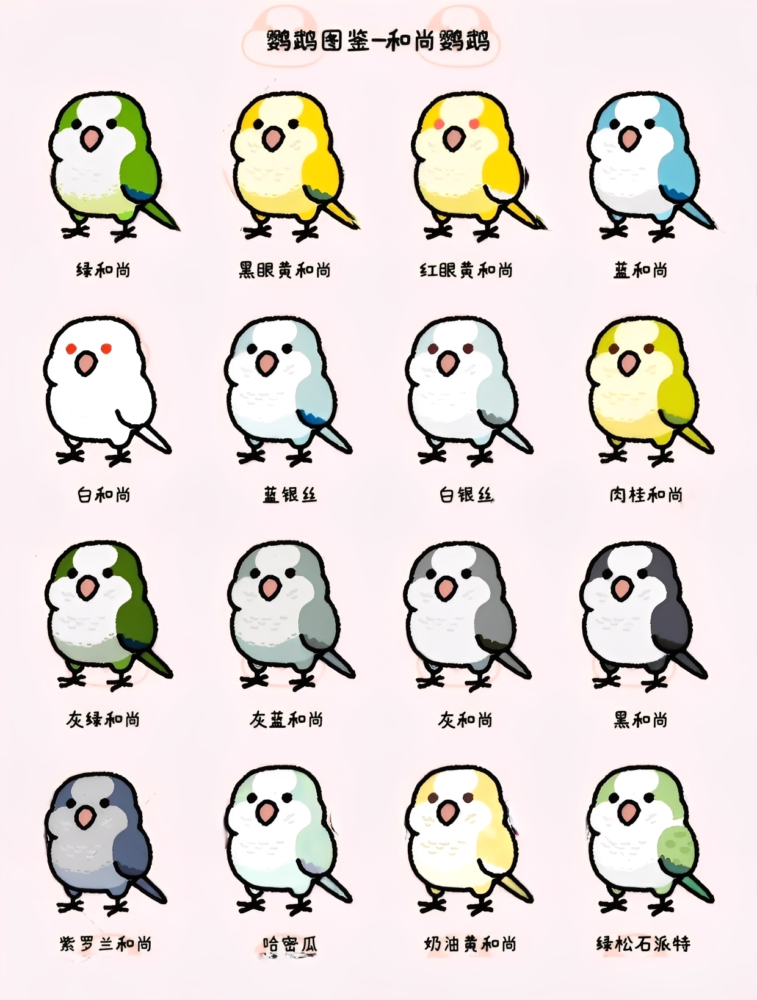
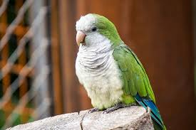
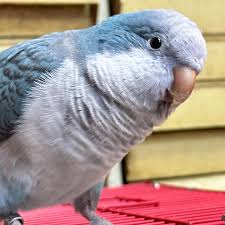
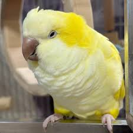
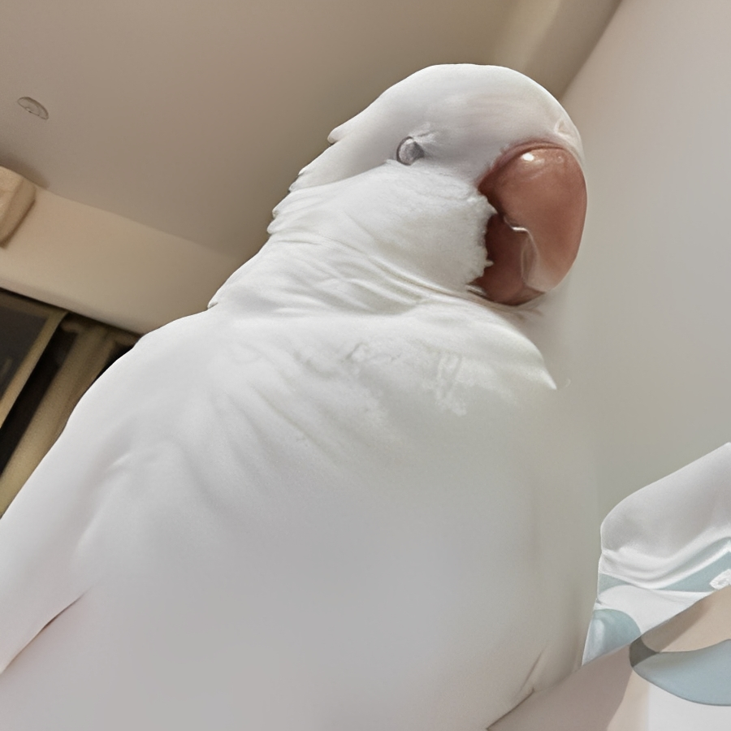
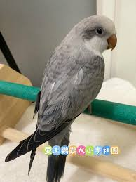
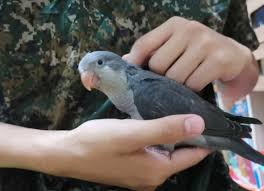
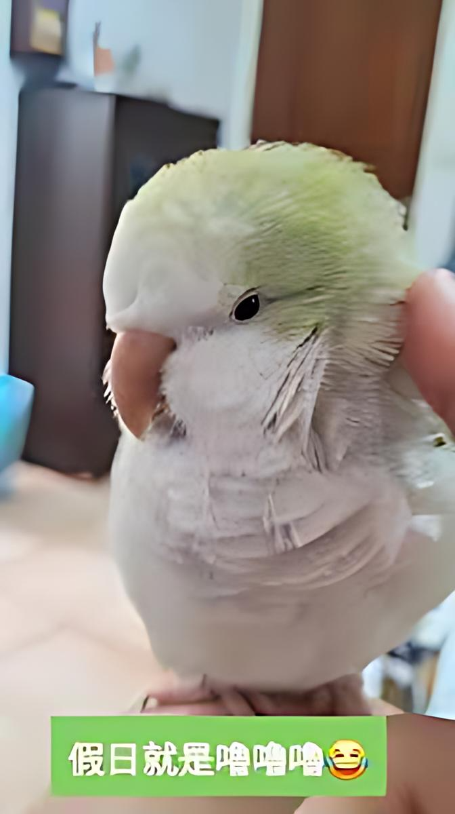
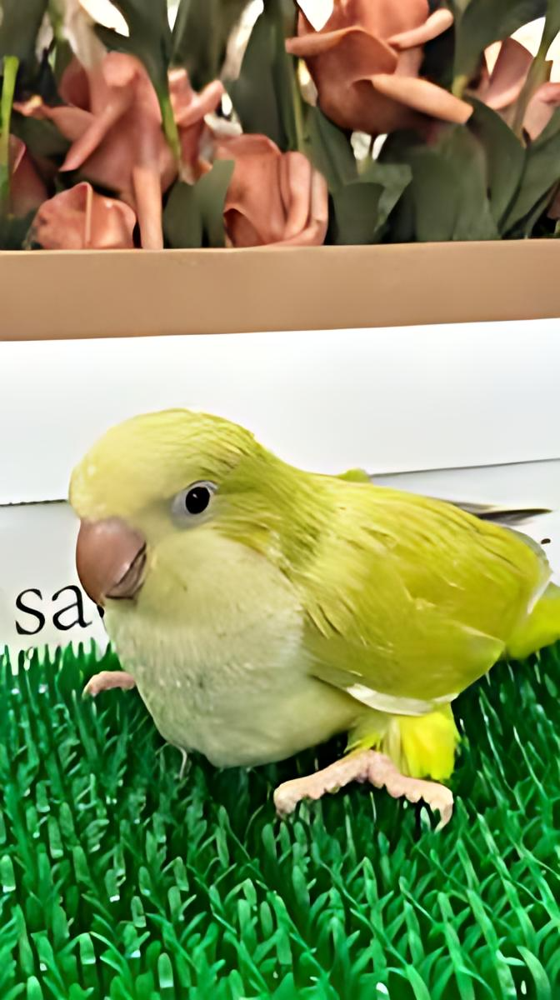
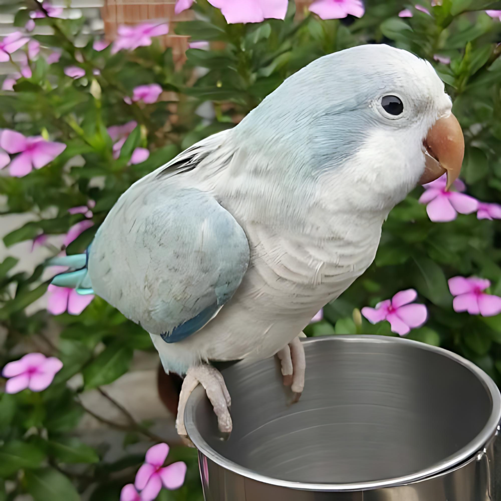
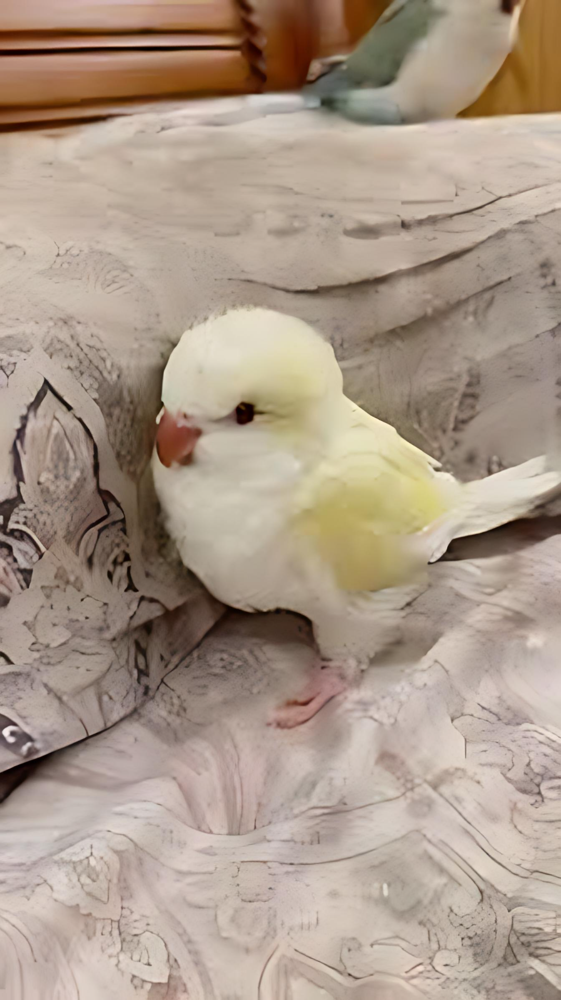
這是和尚鸚鵡最與眾不同的地方。牠們是極少數會用樹枝搭建大型公共巢的鸚鵡，而非使用樹洞。
在飼養環境下，牠們依然會有強烈的築巢慾望，可能會把籠子裡的一切東西編織起來。
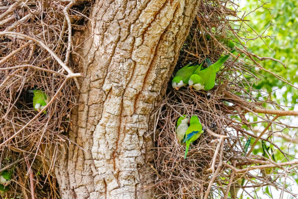
和尚所築的巢有多個房間，供不同家庭使用同時也是提供他們遮風避雨、防禦天敵的地方。
需要盡可能大的籠子，欄間距要小。
必備，提供活動空間。
高品質的鸚鵡專用滋養丸。
新鮮的蔬菜、水果（注意避免酪梨、巧克力等有毒食物）。
可提供少量穀物、豆類。
每天至少1-2小時的放風和互動時間。
提供大量玩具，特別是可供啃咬的木製、皮革玩具，以防牠們破壞家具。
每週清洗籠子、食盆水盆。
由於飲食不當和缺乏運動導致的常見問題。
因無聊或壓力導致的行為問題。
呼吸道真菌感染，需要及時治療。
病毒性疾病，影響羽毛和喙的生長。
眼睛清澈有神，無分泌物。
周圍羽毛清潔，無糞便沾黏。
羽毛整齊有光澤，無斷裂或缺失。
進食正常，活動力充足。
發現異常應立即尋求專業的異寵獸醫。
解釋為何在許多國家（如美國部分州、歐洲）禁止飼養或嚴格管制。
說明牠們如何因寵物貿易或逃逸，在非原產地建立野生族群，與本地鳥類競爭資源，並對農業造成損害。
強烈建議設置一個查詢區塊，提醒讀者在考慮飼養前，務必查詢當地法律。可以提供相關政府網站連結或關鍵字搜索建議。
可從以下的網站或影片中更認識和尚鸚鵡喔!